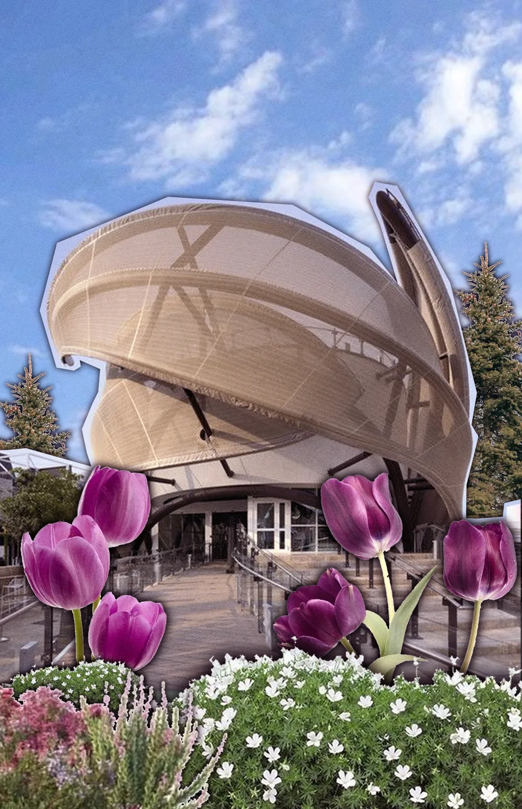
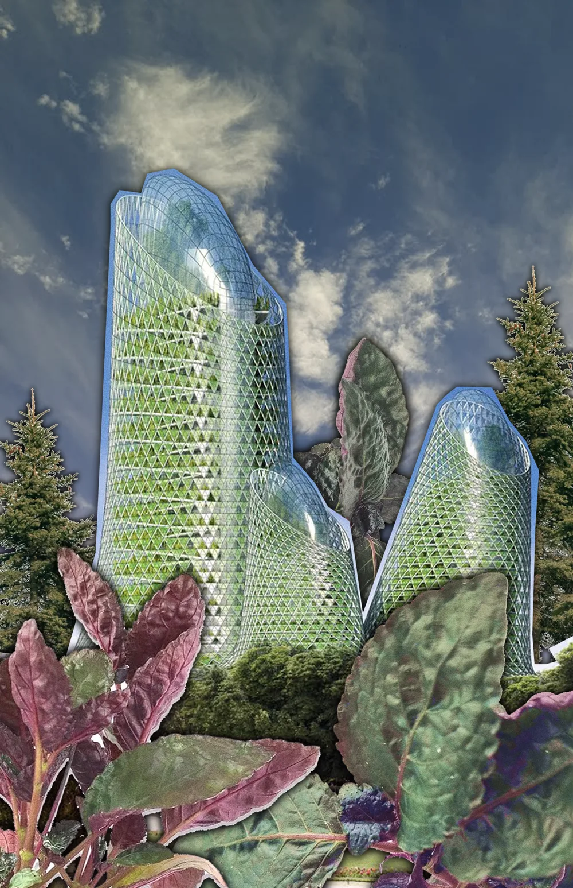
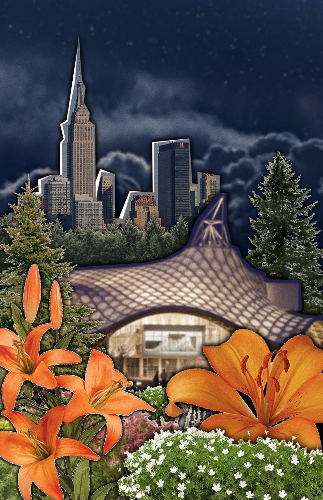
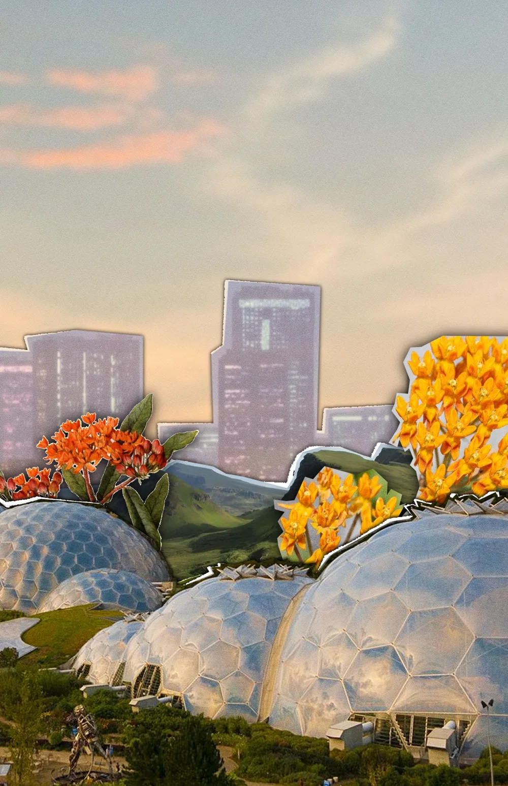

No-signal zones
Inside the gardens your phone rests. Nothing to check, nothing to answer.
Five gardens beneath domes, towers and pavilions, where the pace of the city slows down and nature sets the clock once more.

The park
Otaes Garden is New York's national park project, which in 2050 gives thousands of people the chance to disconnect. Between glass towers, pavilions and domes, the city learned to make room for living things.
Each of the five zones has its own symbol, a color palette that represents it and a flower that shapes its form and its name. That makes them easy to recognize and tell apart, no screens required.
Zone 01
Insect tower
Do you see the three towers? Originally built as an environmental research center, they formed the first part of Otaes Garden. Today, the towers serve as a museum of natural history, biology, and climatology; most notably, the top floor houses an insectarium that is open to the public 24 hours a day, all with the vision of serving as a beacon for research and a space to disconnect from modern technology.
Sep 25 – Nov 5 · Ages 15+
The 13th floor of the insectarium transforms into a crypt of terror that only the bravest dare to enter, come get a good scare and learn about the insects native to our city. Runs from September 25th to November 5th for 15 year olds and more.

Zone 02
Tropical-climate garden
Day Lily is the area that, according to our metrics, is the favorite among New Yorkers; it houses a greater variety of non-native flora than the other five zones combined. Its facilities include not only multiple common areas for the community to enjoy, but also a hotel, a shopping center, and a research center dedicated to global environmental stewardship.
Jul 1 – Sep 1 · All ages + 18+ evenings
In our tropical climate garden, summer isn't over yet; Day Lily is opening its doors and offering a range of summer activities to help you welcome autumn with the best possible mindset. There are activities for all ages, as well as evening events, geared toward those 18 and older led by Native Hawaiian communities. The program runs from July 1st through September 1st.

Zone 03
Educational plant nursery
Roses was founded on the idea that new generations should not forget the lost traditions of gardening and plant care. Established on the opposite side of the city from Ivy, it laid the groundwork for the environmental corridors that now connect the five zones of Otaes Garden; it also inspired the concept of extending such zones throughout the city. At Roses, people of all ages, from the very young to the elderly can discover the wonders of gardening, all without the need for a chip.
Saturdays · Aug – Oct 31
At Roses, we always have gardening classes so that young people can learn how to harvest vegetables, but for the autumn season, we're offering a special class for the little ones to grow their own pumpkins and make their jack-o'-lanterns for Halloween. The classes are held every Saturday from August, when they'll plant the seeds, until October 31st, when they'll make their jack-o'-lanterns.
Zone 04
Cold-climate garden
Along with Day Lily, this was the final area to be unveiled as part of the "Natural Reconnection" initiative, a project under President Zohran Mamdani's administration that breathed new life into Otaes Garden. Tulip features the world's most advanced environmental control technology, effectively creating an entire artificial biosphere within its facilities. In this area, you will find everything from communal spaces to restaurants, the perfect setting to spend a refreshing afternoon with your family.
Nov – first weekend of Jan 2051
The Christmas spirit has arrived in our cold-climate garden, where a Christmas village has been set up. Special treats from many parts of the world will be handed out, alongside a variety of festive activities for everyone, running from November through the first weekend of January 2051.
Zone 05
Pollinator dome
Tuberosa is the area furthest from the New York metropolitan zone among the five other Otaes Garden facilities; it serves as a warm welcome to those who choose to travel by road to reach the city. It features a flower garden, a dome where you can observe and learn about the planet's most important pollinators, a zoo showcasing native wildlife from across the entire continent, stretching from Canada down to Chile, and an underground installation focused on seismology. For these reasons, Tuberosa is the largest area within the entire Otaes Garden complex.
Seasonal exhibition
An exhibition featuring flowers and animals from around the world, ranging from the flora and fauna of Latin America to those of European and Asian countries. Alongside this, there will be a pop-up restaurant showcasing global cuisine, with chefs from various parts of the world offering you the chance to sample unique dishes from across the globe.

What to do and where to do it?
Check out all our activities to ensure you have the best possible experience. This second half of the year, explore the possibilities offered by our facilities, ranging from educational learning experiences to adventures immersed in nature, perfect for disconnecting.
Disconnect
Inside the gardens your phone rests. Nothing to check, nothing to answer.

Light, flowers and insects mark the hours. No clocks, no rush.
Sow, graft and nurture: a return to touch as a form of calm.
Paths designed for walking in a group without speaking, simply keeping each other company.
Plan your visit
Ivy + Tuberosa
The small lives that hold the park together.Day Lily + Roses
Warm light, a night garden and a sowing workshop.Tulip + Ivy
A fabric pavilion and glass towers.